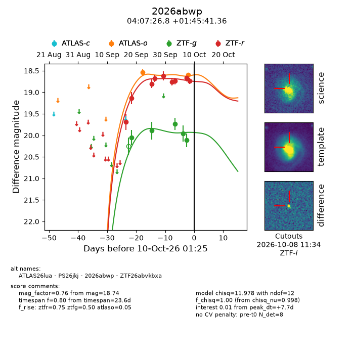
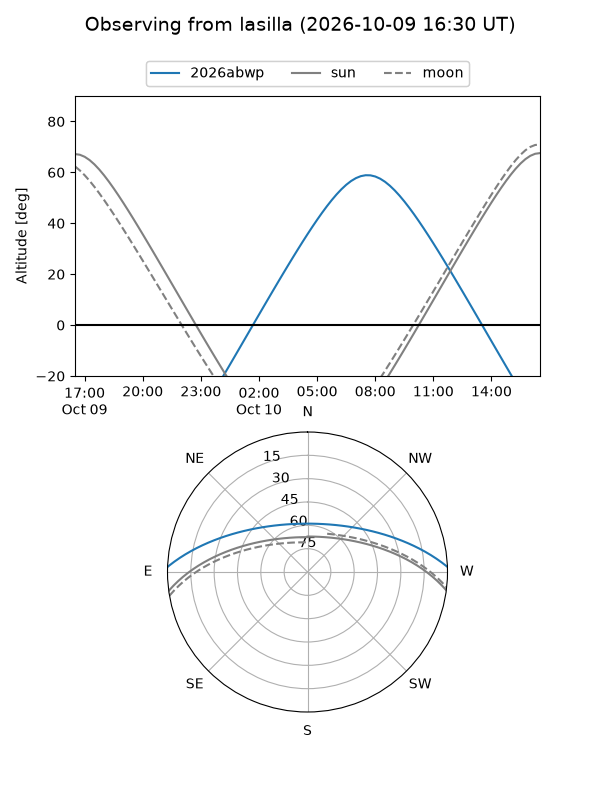
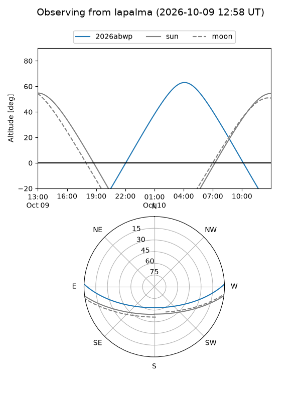
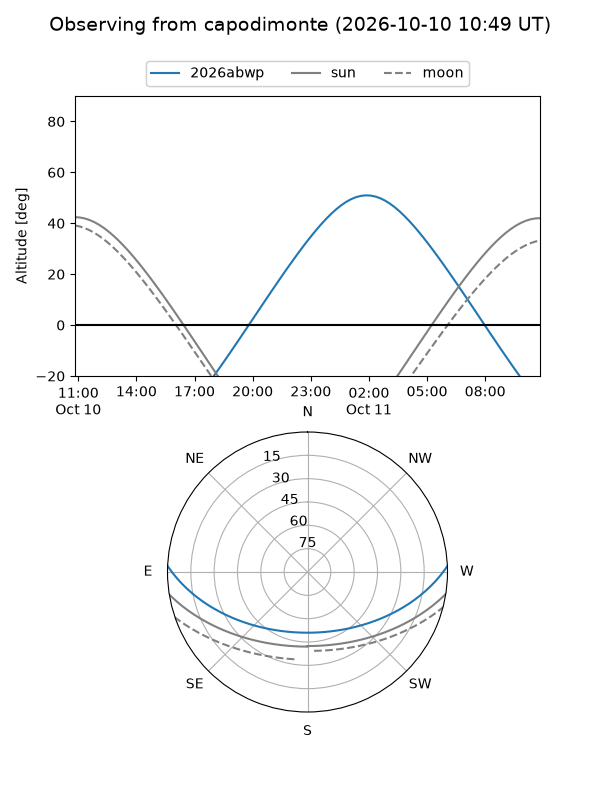
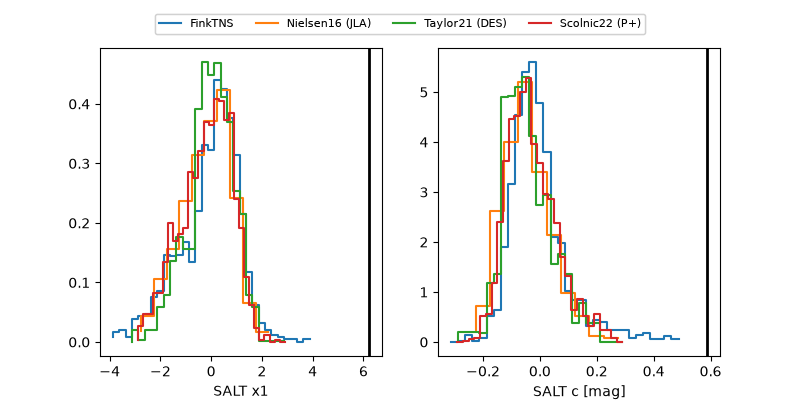

2026abwp
Target 2026abwp at 2026-10-10 13:26
Aliases and brokers:
FINK-ZTF: ztf.fink-portal.org/ZTF26abvkbxa
Lasair-ZTF: lasair-ztf.lsst.ac.uk/objects/ZTF26abvkbxa
ALeRCE-ZTF: alerce.online/object/ZTF26abvkbxa
YSE-PZ: ziggy.ucolick.org/yse/transient_detail/2026abwp
TNS name: wis-tns.org/object/2026abwp
Direct TNS query: direct search
alt names
ZTF26abvkbxa (ztf,fink_ztf)
2026abwp (tns,yse)
ATLAS26lua (atlas)
PS26jkj (panstarrs)
Coordinates:
equatorial (ra, dec) = 61.8617,+1.76149
equatorial (HMS+DMS) = 04:07:26.81,+01:45:41.36
galactic (l, b) = (189.5379,-34.71996)
Flags:
peak dt: +8.2
Photometry:
last atlaso=18.60, ztfg=20.11, ztfr=18.74
2 atlaso, 5 ztfg, 9 ztfr detections
Lightcurve

Visibility



Additional plots
